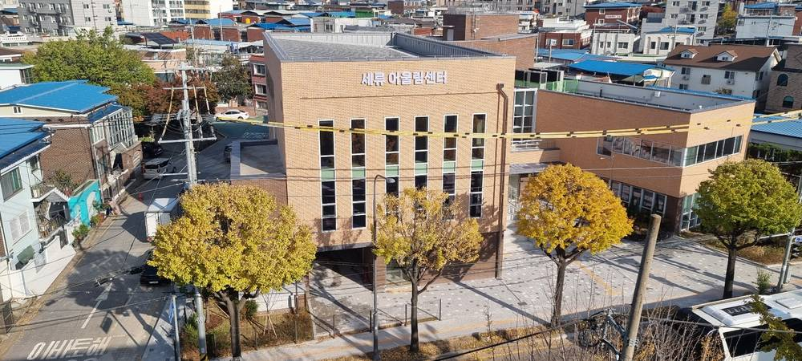

화목보일러 산불 막는다, 충주·진천 산림 옆 가구 점검
중부지방산림청과 충주국유림관리소가 산림 인접 마을의 화목보일러 사용 가구를 찾아가 연통·소화기·재 처리를 본다. 가을철 산불조심기간은 12월 15일까지다.


제주 히카마 노지 재배, 꽃 따니 덩이뿌리 1,066g
제주도 동부농업기술센터가 5~10월 밭 700㎡에서 길러 봤다. 꽃을 딴 구역의 상품률이 68.8%로 가장 높았고, 잎·줄기·씨앗에는 독성이 있다.

경기 도시재생 거점시설 3곳 준공, 수원·포천·평택
수원 세류 어울림센터·포천 관인1+센터·평택 신평 다가치 커뮤니티센터가 11월 문을 열고, 연천 전곡 컬처스테이션은 2028년 10월 준공을 목표로 착공한다.
오늘 주목할 소식
- 수원·오산 노후 임대아파트 1,622세대 전기·소방 점검
- 전기버스 화재 대응, 경기 소방관 62명 실습 교육
- 기계설비 성능점검 개선명령, 60일 안에 계획 내야
- 미래대응기금 지방 몫, 교부세 산식 배분 두고 쟁점
- 시민안전보험 15세 미만 사망보장, 상법 개정 국회 논의
- 생물기후 연구인력 30명, 러브버그 취약지역 찾았다
정치 더보기 ›
기계설비 성능점검 개선명령, 60일 안에 계획 내야
국토교통부 11월 19일 입법예고안에 어린이집·노인복지시설 설비 지원 절차도 담겼다. 의견은 시행령 11월 30일, 시행규칙 12월 10일까지 받는다.
정책 더보기 ›
기계설비 성능점검 개선명령, 60일 안에 계획 내야
국토교통부 11월 19일 입법예고안에 어린이집·노인복지시설 설비 지원 절차도 담겼다. 의견은 시행령 11월 30일, 시행규칙 12월 10일까지 받는다.
산업·경제 더보기 ›
사회연대경제박람회 27일 킨텍스, 기본법 뒤 첫 전국 행사
11월 27~29일 고양 킨텍스에서 열리고 관람은 무료다. 사전등록은 11월 26일까지, 첫날엔 한국사회연대금융협회 창립총회도 열린다.
금융 더보기 ›
미래대응기금 지방 몫, 교부세 산식 배분 두고 쟁점
경기도는 불교부단체라 빠질 수 있다며 성장기여도 반영과 8,750억 원 추산을 내놨다. 행정안전부는 일부를 일반재원으로 교부한다고 설명해 왔다.
사회 더보기 ›
생물기후 연구인력 30명, 러브버그 취약지역 찾았다
국립생물자원관이 올해 처음 키운 연구자 30명이 11월 20일 성과를 낸다. 서울 러브버그 민원 2만4,000건과 제비 관측 1만 건을 분석했다.
지역 더보기 ›
화목보일러 산불 막는다, 충주·진천 산림 옆 가구 점검
중부지방산림청과 충주국유림관리소가 산림 인접 마을의 화목보일러 사용 가구를 찾아가 연통·소화기·재 처리를 본다. 가을철 산불조심기간은 12월 15일까지다.
오피니언 더보기 ›
이순형 동신대 교수, 전남광주 재생에너지 50GW 일감 지역 기업에 돌리자 제안
투자 250조 원 추산하며 발주 시간표·공동도급·인력 양성 주문…산업부는 호남 주요 전력망 확충을 2031년 이후로 설명
시민에너지 더보기 ›
강화군 이장 130여 명, 햇빛소득마을 실무 교육 받아
인천 강화군이 11월 16일 군청 진달래홀에서 부지 선정·인허가·주민 수용성을 가르쳤다. 인천은 행안부 2차 공모에서 2개 마을이 신청해 1곳이 뽑혔다.